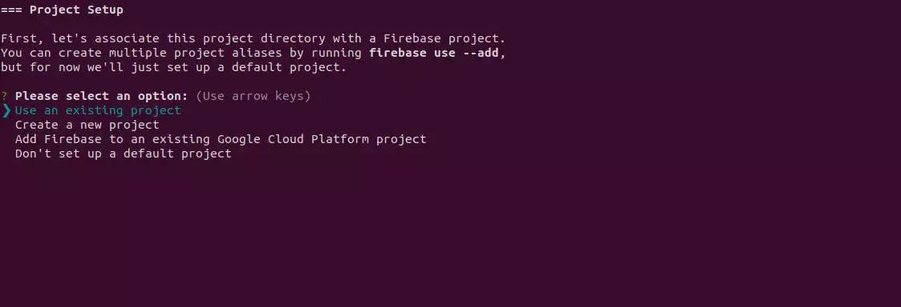

TECHNICAL
Hướng dẫn sử dụng Firebase
Firebase là gì ?
Khái niệm: Firebase là một dịch vụ cơ sở dữ liệu thời gian thực được cung cấp bởi Google và hoạt động trên nền tảng đám mây. Nó giúp các lập trình phát triển nhanh các ứng dụng di động bằng cách đơn giản hóa các thao tác với cơ sở dữ liệu.
Cách đăng ký tài khoản Firebase
Để đăng ký tài khoản trên Firebase, hãy mở https://firebase.google.com/ , và bấm vào "Bắt đầu."
Sau đó, bạn cần tạo tài khoản Google hoặc sử dụng tài khoản hiện có. Sau khi hoàn thành bước đầu tiên, bạn sẽ đến bảng điều khiển Firebase. Bước tiếp theo là tạo một dự án.
Cách tạo dự án trên Firebase
Để tạo một dự án, bạn phải thực hiện 3 bước đơn giản:
1. Nhấp vào "Thêm dự án" và đặt tên cho nó trong cửa sổ mới.
2. Bật hoặc tắt chức năng Google Analytics cho dự án và nhấp vào "Tạo dự án"
Sau một vài phút, dự án của bạn sẽ được tạo.
Cách sử dụng Firebase miễn phí
Gói Spark là gói miễn phí không có bất kỳ chi phí hàng tháng nào . Nó có một số hạn chế, nhưng như vậy là quá đủ để bắt đầu dự án của bạn, đặc biệt nếu bạn định sử dụng nó làm nền tảng lưu trữ cho trang web tĩnh của mình.
Cách thiết lập dịch vụ lưu trữ Firebase
Thiết lập lưu trữ Firebase cũng khá đơn giản. Đăng nhập vào tài khoản của bạn và chọn dự án của bạn. Sau đó, trong menu bên trái, nhấp vào "Xây dựng" và chọn "Lưu trữ" từ danh sách thả xuống.
Trong cửa sổ mới, bạn sẽ thấy màn hình chào mừng. Nhấp vào "Bắt đầu."
Để lưu trữ dự án của bạn, trước tiên bạn cần thiết lập Firebase CLI.
Mở cửa sổ đầu cuối của bạn và nhập lệnh sau:
npm install -g firebase-tools
Sau khi thiết lập xong, hãy nhập nội dung sau vào thiết bị đầu cuối của bạn:
firebase login
Nó sẽ đưa bạn đến màn hình đăng nhập để cấp quyền truy cập.
Bước tiếp theo là điều hướng đến thư mục dự án của bạn bên trong cửa sổ đầu cuối, nơi bạn đã lưu trữ trang web tĩnh của mình.
Chạy lệnh sau:
firebase init
Tiếp theo, chọn một tài khoản từ danh sách và nhấn enter.
Theo mặc định, thư mục chung được đặt thành "công khai". Nếu bạn muốn chỉ định một thư mục khác, bạn có thể làm như vậy trong bước tiếp theo. Ví dụ: dự án Next.js của tôi tạo phiên bản tĩnh của trang web trong thư mục 'out', vì vậy tôi chỉ định nó ở bước này.
Chúng tôi đã hoàn tất việc thiết lập. Bây giờ, đã đến lúc triển khai dự án của chúng tôi lên Firebase.
Trong cửa sổ terminal, bên trong thư mục dự án của bạn, hãy nhập lệnh sau:
firebase deploy --only hosting